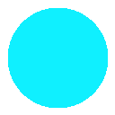
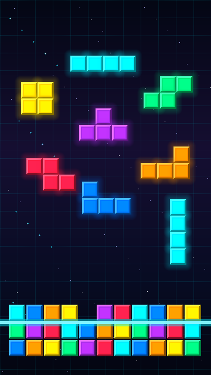

TETRIS
QC MATRIX CALIBRATION & SYNTHESIS

QC Protocol SOP
QC Mission Directives
Synthesize polymer tetromino chains into solid horizontal matrices. Clear full lines to prevent buffer overflow and advance through 12 QC sectors.
1. Super Rotation (SRS)
Tap ↻ ROTATE or ↺ CCW. Wall-kicks allow rotating flush against boundaries!

2. Lateral Drift & Drop
Use ◀ LEFT / RIGHT ▶ to steer. Hold ▼ SOFT DROP for fast placement.

3. Matrix Line Clears
Fill complete rows of 10 cells. Clearing 4 lines simultaneously triggers a massive TETRIS bonus!

4. Hold Chamber
Tap ⇲ HOLD to save a critical piece (like the cyan I-bar) for emergencies.


Tetris Rules & On-Screen Keys
• Steering: Tap or hold ◀ LEFT / RIGHT ▶ to glide pieces laterally.
• Soft Drop: Hold ▼ SOFT DROP to fall at 10x speed.
• Instant Hard Drop: Tap the giant glowing ⚡ HARD DROP button to instantly lock the piece.
• Rotation: Tap ↻ ROTATE (Clockwise) or ↺ CCW.
• Hold Chamber: Tap ⇲ HOLD to save the current piece for later.
• Swipe Left / Right on the matrix to slide.
• Swipe Down to soft drop.
• Swipe Up or tap with two fingers to hard drop immediately.
• Tap the matrix to rotate clockwise.
• 1 Line: 100 × Level | 2 Lines: 300 × Level
• 3 Lines: 500 × Level | 4 Lines (TETRIS): 800 × Level!
• Earn 1 to 3 stars per sector based on efficiency and combos.
Sector Calibrated!
Matrix stabilization achieved. All target rows synthesized.
Buffer Overflow!
Polymer containment breach: Blocks exceeded visible matrix ceiling!